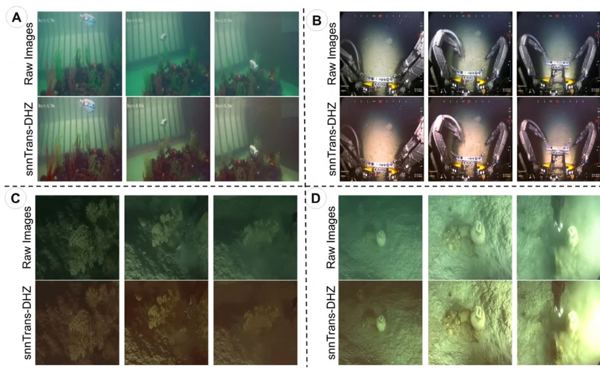

Neuromorphic Computing and Engineering · 2026
snnTrans-DHZ
A spiking transformer that estimates background light and restores underwater images from RGB and LAB inputs.

Postdoctoral Fellow, Khalifa University
Computer and Information Engineering · Abu Dhabi, UAE
I study visual perception and motion estimation for underwater robots operating with low visibility and limited onboard compute. My work uses spiking neural networks for image enhancement and visual–inertial odometry. I also work on semantic 3D mapping for ecological monitoring.
Neuromorphic Computing and Engineering · 2026
A spiking transformer that estimates background light and restores underwater images from RGB and LAB inputs.

IEEE Journal of Oceanic Engineering · 2026
A hybrid visual–inertial odometry model that combines convolutional visual features with spiking temporal processing for underwater pose estimation.